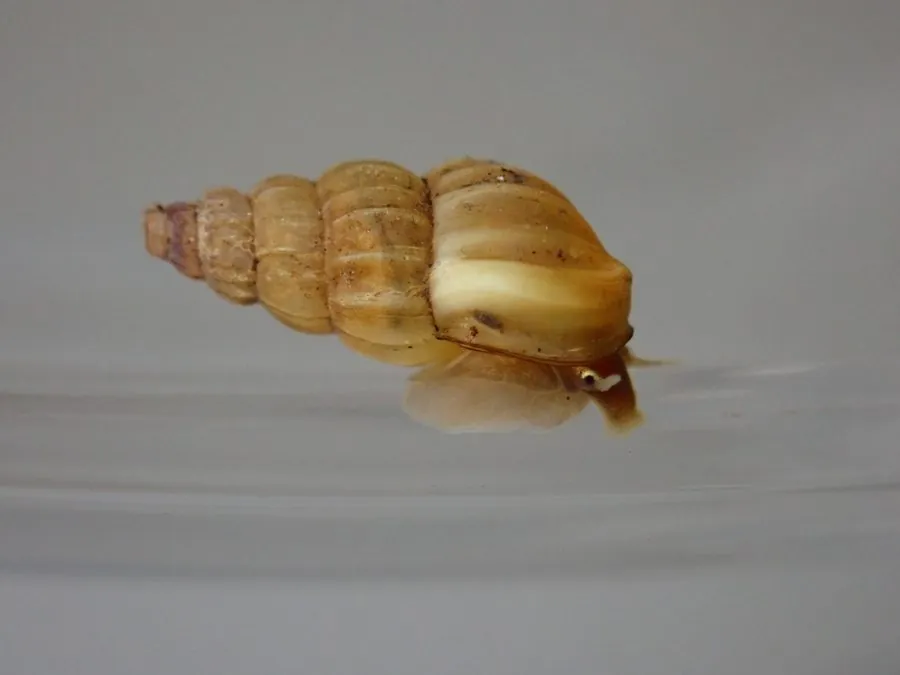

软体动物 · 动物界
湖北钉螺 Oncomelania hupensis

体型细小的淡水螺，壳形像一枚小钉，是日本血吸虫的唯一中间宿主，在中国血吸虫病防治中具有特殊意义。
- 分类
- 门软体动物门纲腹足纲目中腹足目科圆口螺科属钉螺属
- 栖息环境
- 长江中下游的湖沼、沟渠、稻田和江滩湿地，喜水陆交界的潮湿环境
- 地理分布
- 中国长江中下游及南方部分省区的淡水湿地，以湖北、湖南、江西等地为主
- 保护级别
- 暂无评估（血吸虫病防治对象，不属于保护物种）
物种志
湖北钉螺的贝壳很小，呈圆锥形或塔形，像一枚小钉子，因此得名。壳高一般 0.6–1 cm，壳面黄褐或暗褐色，有纵肋或光滑两种类型，壳口有角质的厣。雌雄异体，雌螺比雄螺略大。
湖北钉螺分布于中国长江中下游及南方部分地区的湖沼、沟渠、稻田和江滩湿地，尤其喜欢水陆交界、杂草丛生的潮湿环境。它是杂食性动物，用齿舌刮食藻类、腐殖质和细菌。湖北钉螺最受关注的是它与血吸虫的关系：它是日本血吸虫的唯一中间宿主，血吸虫的毛蚴进入钉螺体内发育成尾蚴，尾蚴逸出后钻进人或动物的皮肤，造成感染。因此消灭钉螺是中国血吸虫病防治的关键环节，各地长期开展查螺、灭螺工作。目前它没有IUCN 的正式评估，作为血吸虫病防治对象，它不属于保护物种。
形态与习性
- 食性刮食藻类、腐殖质和细菌
- 壳高一般 0.6–1 cm，非常细小
- 栖息地湖沼、沟渠、稻田和江滩湿地，水陆交界处
- 寄生关系日本血吸虫的唯一中间宿主
- 防治意义消灭钉螺是血吸虫病防治的关键环节
- 繁殖雌雄异体，卵生，卵产于潮湿泥土中
趣味知识
- 湖北钉螺只有米粒大小，壳形像一枚小钉子，因此得名。
- 它是日本血吸虫唯一的中间宿主，血吸虫的幼虫必须在钉螺体内发育。
- 消灭钉螺是中国血吸虫病防治的关键措施之一。
生态关系
- 寄生 ← 日本血吸虫 钉螺是日本血吸虫的中间宿主